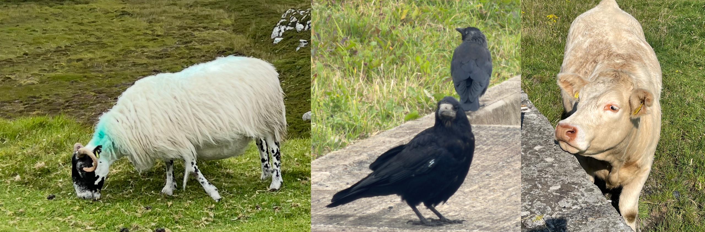

<!--
  Donegal animal classifier: paste everything in this file into a WordPress
  "Custom HTML" block. Change the  to the Media Library URL of
  donegal_animals_model.png (the full-size original, not a resized copy).
  The classification model is read out of that image's pixels; nothing else
  is downloaded. If your host rewrites image URLs through a CDN that is not
  i0.wp.com, add data-model-src="<original file URL>" to the div below.
  Keep this file free of ampersands: WordPress rewrites each one as an HTML
  entity, even inside <script>, which breaks the JavaScript.
-->
<div id="funclassify">
  <style>
    #funclassify { --fc-accent: #2f6b3a; --fc-muted: rgba(127,127,127,.25); max-width: 1000px; margin: 0 auto; font: inherit; color: inherit; }
    #funclassify .fc-photo { position: relative; }
    #funclassify img { display: block; width: 100%; height: auto; border-radius: 6px; }
    #funclassify .fc-box { position: absolute; border: 3px solid #ffd400; border-radius: 6px; box-shadow: 0 0 0 1px rgba(0,0,0,.5), 0 0 12px rgba(0,0,0,.45); pointer-events: none; transition: left .35s ease, top .35s ease, width .35s ease, height .35s ease, opacity .2s; }
    #funclassify .fc-box[hidden] { display: block; opacity: 0; }
    #funclassify .fc-tag { position: absolute; left: -3px; top: -3px; padding: .1em .45em; background: #ffd400; color: #111; font-size: clamp(10px, 1.6vw, 14px); font-weight: 600; text-transform: capitalize; border-radius: 6px 0 6px 0; white-space: nowrap; }
    #funclassify .fc-box.fc-bottom .fc-tag { top: auto; bottom: -3px; border-radius: 0 6px 0 6px; }
    #funclassify form { display: flex; gap: .5rem; margin: 1rem 0 .5rem; }
    #funclassify input { flex: 1; min-width: 0; font: inherit; padding: .6rem .8rem; border: 1px solid var(--fc-muted); border-radius: 6px; background: transparent; color: inherit; }
    #funclassify input:focus { outline: 2px solid var(--fc-accent); outline-offset: 1px; }
    #funclassify button { font: inherit; padding: .6rem 1rem; border: 0; border-radius: 6px; background: var(--fc-accent); color: #fff; cursor: pointer; }
    #funclassify button:disabled, #funclassify input:disabled { opacity: .5; cursor: default; }
    #funclassify .fc-status { min-height: 1.5em; margin: .25rem 0; }
    #funclassify .fc-answer { font-size: 1.4em; font-weight: 600; text-transform: capitalize; }
    #funclassify .fc-bars { display: grid; grid-template-columns: max-content 1fr 3.5em; gap: .3rem .6rem; align-items: center; font-size: .9em; }
    #funclassify .fc-bar { height: .6em; border-radius: 3px; background: var(--fc-muted); overflow: hidden; }
    #funclassify .fc-bar span { display: block; height: 100%; background: var(--fc-accent); }
    #funclassify .fc-pct { text-align: right; font-variant-numeric: tabular-nums; }
    #funclassify .fc-error { color: #b3261e; }
  </style>

  <div class="fc-photo">
    
    <div class="fc-box" hidden aria-hidden="true"><span class="fc-tag"></span></div>
  </div>

  <form autocomplete="off">
    <input type="text" placeholder="Describe one of the animals, then press Enter" aria-label="Describe an animal" disabled>
    <button type="submit" disabled>Classify</button>
  </form>
  <div class="fc-status" role="status" aria-live="polite">Reading the model hidden in the image…</div>
  <div class="fc-bars" hidden></div>

  <script>
  (function () {
    // ---- core start (no DOM use) ----

    const MAGIC = "FCM1";

    async function inflate(bytes) {
      const stream = new Blob([bytes]).stream().pipeThrough(new DecompressionStream("deflate"));
      return new Uint8Array(await new Response(stream).arrayBuffer());
    }

    // Decode an 8-bit, non-interlaced RGB/RGBA PNG ourselves rather than going
    // through <canvas>: canvas readback can be altered by colour management and
    // by anti-fingerprinting (Brave, Firefox), which would scramble the hidden bits.
    async function decodePng(buffer) {
      const data = new Uint8Array(buffer);
      const view = new DataView(buffer);
      const sig = [137, 80, 78, 71, 13, 10, 26, 10];
      if (!sig.every((b, i) => data[i] === b)) throw new Error("Not a PNG image");
      let pos = 8, width, height, bpp;
      const idat = [];
      while (pos < data.length) {
        const len = view.getUint32(pos);
        const type = String.fromCharCode(...data.subarray(pos + 4, pos + 8));
        const body = data.subarray(pos + 8, pos + 8 + len);
        if (type === "IHDR") {
          width = view.getUint32(pos + 8);
          height = view.getUint32(pos + 12);
          const depth = body[8], colour = body[9], interlace = body[12];
          if (depth !== 8 || ![2, 6].includes(colour) || interlace !== 0)
            throw new Error("Image has been re-encoded; upload the original donegal_animals_model.png");
          bpp = colour === 2 ? 3 : 4;
        } else if (type === "IDAT") {
          idat.push(body);
        } else if (type === "IEND") {
          break;
        }
        pos += 12 + len;
      }
      const raw = await inflate(new Blob(idat));
      const stride = width * bpp;
      const rows = [];
      let prev = new Uint8Array(stride);

      // Undo PNG scanline filters lazily, only as far as the payload needs.
      function row(y) {
        while (rows.length <= y) {
          const r = rows.length, start = r * (stride + 1);
          const filter = raw[start], line = raw.slice(start + 1, start + 1 + stride);
          for (let i = 0; i < stride; i++) {
            const a = i >= bpp ? line[i - bpp] : 0, b = prev[i], c = i >= bpp ? prev[i - bpp] : 0;
            let add = 0;
            if (filter === 1) add = a;
            else if (filter === 2) add = b;
            else if (filter === 3) add = (a + b) >> 1;
            else if (filter === 4) {
              const p = a + b - c, pa = Math.abs(p - a), pb = Math.abs(p - b), pc = Math.abs(p - c);
              add = pa <= Math.min(pb, pc) ? a : pb <= pc ? b : c;
            }
            line[i] = (line[i] + add) % 256;
          }
          rows.push(line);
          prev = line;
        }
        return rows[y];
      }
      return { width, height, bpp, row };
    }

    // Payload bits live in the lowest bit of each R, G, B value, row by row.
    function readHiddenBytes(png, offset, count) {
      const perRow = png.width * 3, out = new Uint8Array(count);
      for (let n = 0; n < count; n++) {
        let v = 0;
        for (let k = 0; k < 8; k++) {
          const bit = (offset + n) * 8 + k, y = Math.floor(bit / perRow), r = bit % perRow;
          v = (v << 1) | (png.row(y)[Math.floor(r / 3) * png.bpp + (r % 3)] % 2);
        }
        out[n] = v;
      }
      return out;
    }

    async function modelFromPng(buffer) {
      const png = await decodePng(buffer);
      const head = readHiddenBytes(png, 0, 8);
      if (String.fromCharCode(...head.subarray(0, 4)) !== MAGIC)
        throw new Error("No model found in this image");
      const length = new DataView(head.buffer).getUint32(4);
      const json = new TextDecoder().decode(await inflate(readHiddenBytes(png, 8, length)));
      return JSON.parse(json);
    }

    // Translate a Python `re` pattern to an equivalent JavaScript Unicode regex.
    function pyRegex(pattern) {
      const WORD = "\\p{L}\\p{N}_", SYNTAX = "^$\\.*+?()[]{}|/";
      let out = "", inClass = false;
      for (let i = 0; i < pattern.length; i++) {
        const ch = pattern[i];
        if (ch === "\\") {
          const nx = pattern[++i];
          if (nx === "w") out += inClass ? WORD : `[${WORD}]`;
          else if (nx === "W") out += inClass ? "\\W" : `[^${WORD}]`;
          else if (nx === "d") out += "\\p{Nd}";
          else if (nx === "-") out += inClass ? "\\-" : "-";
          else if (/[A-Za-z0-9]/.test(nx) || SYNTAX.includes(nx)) out += "\\" + nx;
          else out += nx; // Python allows escaping any punctuation; JS /u does not
          continue;
        }
        if (ch === "[") inClass = true;
        else if (ch === "]") inClass = false;
        else if (pattern.startsWith("(?P<", i)) { out += "(?<"; i += 3; continue; }
        out += ch;
      }
      return out;
    }

    const PY_FLOAT = /^\s*[+-]?((\d(_?\d)*)(\.(\d(_?\d)*)?)?|\.\d(_?\d)*)(e[+-]?\d(_?\d)*)?\s*$|^\s*[+-]?(inf|infinity|nan)\s*$/i;
    const WORD_PUNCT = new RegExp(pyRegex("\\w+|[^\\w\\s]+"), "gu");
    const wordPunct = t => t.match(WORD_PUNCT) || [];
    const URL = new RegExp(pyRegex("((https?):((//)|(\\\\\\\\))+([\\w\\d:#@%/;$()~_?\\+-=\\\\\\.\\x26](#!)?)*)"), "gu");

    function buildClassifier(spec) {
      if (spec.format !== "funclassify.bow-linear/1") throw new Error("Unknown model format " + spec.format);
      const index = new Map(spec.vocabulary.map((t, i) => [t, i]));
      let ngram = [1, 1];
      const steps = spec.preprocess.map(s => {
        switch (s.type) {
          case "lowercase": return { text: t => t.toLowerCase() };
          case "strip_accents": return { text: t => { const n = t.normalize("NFKD"); return n === t ? t : n.replace(/\p{Mn}/gu, ""); } };
          case "strip_html": return { text: t => new DOMParser().parseFromString(t, "text/html").body.textContent };
          case "remove_urls": return { text: t => t.replace(URL, "") };
          case "tokenize": { const re = new RegExp(pyRegex(s.pattern), "gu");
            return { tokenize: t => (t.match(re) || []).filter(Boolean) }; }
          case "remove_words": { const w = new Set(s.words); return { keep: t => !w.has(t) }; }
          case "keep_words": { const w = new Set(s.words); return { keep: t => w.size === 0 || w.has(t) }; }
          case "remove_matching": { const re = new RegExp(s.anywhere ? pyRegex(s.pattern) : `^(?:${pyRegex(s.pattern)})`, "u");
            return { keep: t => !re.test(t) }; }
          case "remove_numbers": return { keep: t => !PY_FLOAT.test(t) };
          case "ngrams": return { ngrams: s.range };
          default: throw new Error("Unsupported preprocessing step " + s.type);
        }
      });
      const { term_frequency: tfMode, normalization } = spec.bow;
      const { coef, intercept, link } = spec.model;

      return function classify(text) {
        // Mirrors Orange: transforms apply to the document (and tokens, if any);
        // filters on untokenized text use Word and Punctuation; with no tokenizer at
        // all, Orange falls back to lowercase + Word and Punctuation.
        let tokens = null, doc = String(text);
        for (const s of steps) {
          if (s.text) { doc = s.text(doc); if (tokens) tokens = tokens.map(s.text); }
          if (s.tokenize) tokens = s.tokenize(doc);
          if (s.keep) tokens = (tokens || wordPunct(doc)).filter(s.keep);
          if (s.ngrams) { tokens = tokens || wordPunct(doc); ngram = s.ngrams; }
        }
        if (!tokens) tokens = wordPunct(doc.toLowerCase());
        const terms = [];
        for (let n = ngram[0]; n <= ngram[1]; n++)
          for (let i = 0; i + n <= tokens.length; i++) terms.push(tokens.slice(i, i + n).join(" "));

        const counts = new Map();
        for (const t of terms) if (index.has(t)) { const i = index.get(t); counts.set(i, (counts.get(i) || 0) + 1); }
        const x = new Map();
        for (const [i, tf] of counts) {
          const w = tfMode === "binary" ? 1 : tfMode === "sublinear" ? 1 + Math.log(tf) : tf;
          x.set(i, w * spec.global_weights[i]);
        }
        const norm = normalization === "l1" ? [...x.values()].reduce((a, v) => a + Math.abs(v), 0)
                   : normalization === "l2" ? Math.sqrt([...x.values()].reduce((a, v) => a + v * v, 0)) : 1;
        if (norm > 0) for (const [i, v] of x) x.set(i, v / norm);

        const z = coef.map((row, k) => { let s = intercept[k]; for (const [i, v] of x) s += row[i] * v; return s; });
        let p;
        if (link === "binary") { const p1 = 1 / (1 + Math.exp(-z[0])); p = [1 - p1, p1]; }
        else if (link === "ovr") { const s = z.map(v => 1 / (1 + Math.exp(-v))), t = s.reduce((a, b) => a + b, 0); p = s.map(v => v / t); }
        else { const m = Math.max(...z), e = z.map(v => Math.exp(v - m)), t = e.reduce((a, b) => a + b, 0); p = e.map(v => v / t); }

        return {
          label: spec.classes[p.indexOf(Math.max(...p))],
          probabilities: spec.classes.map((c, k) => ({ label: c, p: p[k] })),
          knownTerms: [...counts.keys()].map(i => spec.vocabulary[i]),
        };
      };
    }

    // ---- core end ----

    // currentScript is null when caching/optimisation plugins (WP Rocket,
    // LiteSpeed, Autoptimize, Cloudflare Rocket Loader) delay or re-inject scripts.
    const root = document.currentScript?.closest("#funclassify") || document.getElementById("funclassify");
    const img = root.querySelector("img"), form = root.querySelector("form");
    const input = form.querySelector("input"), button = form.querySelector("button");
    const status = root.querySelector(".fc-status"), bars = root.querySelector(".fc-bars");
    const box = root.querySelector(".fc-box"), tag = box.querySelector(".fc-tag");
    let classify = null, regions = {};

    // Regions are fractions of the image size, so the box scales with the photo.
    function highlight(label) {
      const r = regions[label];
      if (!r) { box.hidden = true; return; }
      Object.assign(box.style, { left: r.x * 100 + "%", top: r.y * 100 + "%", width: r.w * 100 + "%", height: r.h * 100 + "%" });
      box.classList.toggle("fc-bottom", r.y < 0.05);  // keep the tag inside the photo
      tag.textContent = label;
      box.hidden = false;
    }

    function say(text, cls) { status.className = "fc-status " + (cls || ""); status.textContent = text; }

    function render(result) {
      if (!result.knownTerms.length) {
        say("None of those words are in my vocabulary. Try describing colours, sounds or behaviour.");
        bars.hidden = true;
        highlight(null);
        return;
      }
      say("");
      const answer = document.createElement("span");
      answer.className = "fc-answer";
      answer.textContent = result.label;
      status.append("That sounds like a ", answer);
      bars.replaceChildren(...result.probabilities.sort((a, b) => b.p - a.p).flatMap(({ label, p }) => {
        const name = document.createElement("span"), bar = document.createElement("div"),
              fill = document.createElement("span"), pct = document.createElement("span");
        name.textContent = label;
        bar.className = "fc-bar"; fill.style.width = (p * 100).toFixed(1) + "%"; bar.append(fill);
        pct.className = "fc-pct"; pct.textContent = Math.round(p * 100) + "%";
        return [name, bar, pct];
      }));
      bars.hidden = false;
      highlight(result.label);
    }

    function submit(e) {
      e.preventDefault();
      if (!classify || !input.value.trim()) return;
      render(classify(input.value));
    }
    form.addEventListener("submit", submit);
    input.addEventListener("keydown", e => { if (e.key !== "Enter" || e.isComposing) return; submit(e); });

    // WordPress.com and Jetpack rewrite content images to their CDN
    // (https://i0.wp.com/<site>/<path>?w=...), which re-encodes them as WebP and
    // destroys the hidden model, so fetch the untouched original instead.
    function originalUrl(src) {
      const cdn = /^https?:\/\/i\d\.wp\.com\/([^?#]+)/.exec(src);
      return cdn ? "https://" + cdn[1] : src;
    }
    const modelUrl = root.dataset.modelSrc || originalUrl(img.dataset.lazySrc || img.getAttribute("src"));

    fetch(modelUrl)
      .then(r => { if (!r.ok) throw new Error(`Could not load image (HTTP ${r.status})`); return r.arrayBuffer(); })
      .then(modelFromPng)
      .then(spec => {
        classify = buildClassifier(spec);
        regions = spec.regions || {};
        input.disabled = button.disabled = false;
        say(`Model loaded: I know ${spec.classes.join(", ")}.`);
        input.focus({ preventScroll: true });
      })
      .catch(err => say(err.message, "fc-error"));
  })();
  </script>
</div>
